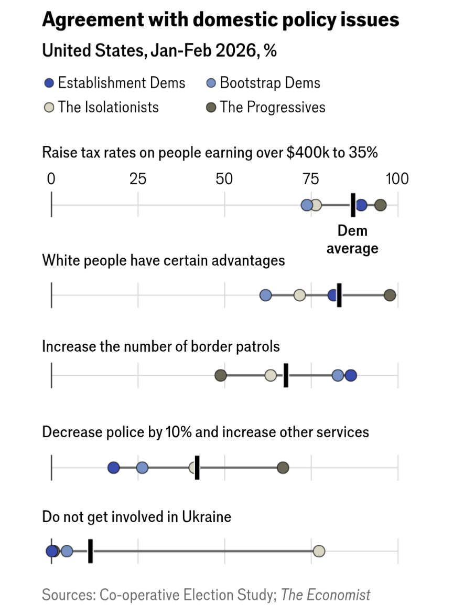
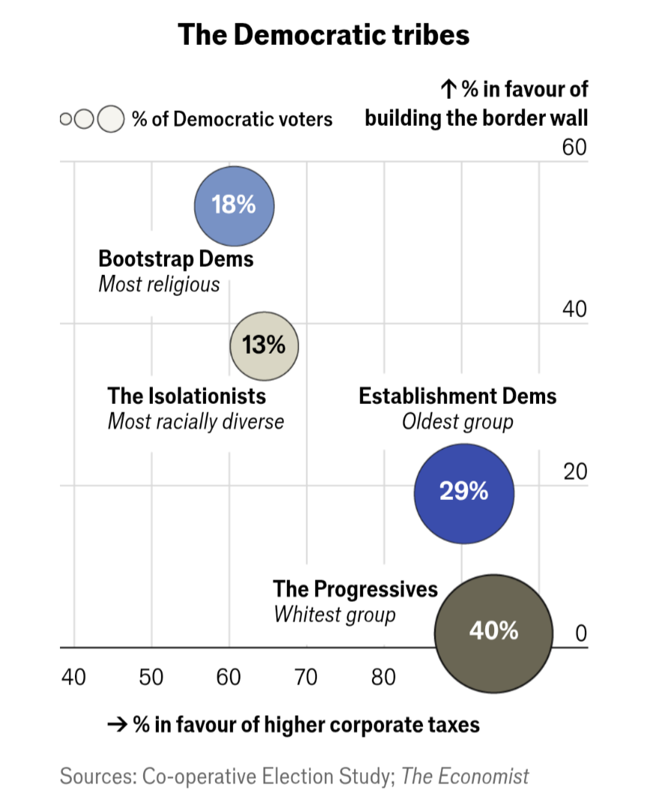

What kind of Democrat are you?
Nine questions based on survey data from 19,000 Democrats. Based on research by The Economist and the Cooperative Election Study.
Source: The Economist / YouGov Cooperative Election Study, 2024 · Read the original article
The data behind the tribes


Sources: Co-operative Election Study; The Economist